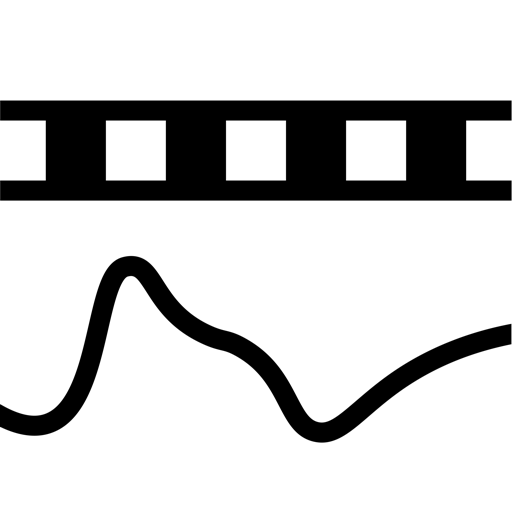

One problem deleted.
After a long day with a camera and a recorder, I always ended up with a mess of files. I made this to sort it out.
Put your video and audio in a folder. Drop it in. Get synchronized, drift-corrected MOV files out.
Tiny AV Sync finds the shared sound and corrects steady clock drift by resampling. Separate recordings stay on separate audio tracks. Your originals stay untouched. Everything happens on your Mac.
30 days free. Then $9.99 for a lifetime.
One purchase. No subscription or automatic charge. Local prices vary.
Coming to the Mac App Store.Apple silicon · macOS 15 or later
Formats
Video: MOV, MP4, M4V.
Audio: WAV, AIFF, CAF, FLAC, M4A, AAC, MP3.
16/24-bit PCM and 32-bit float recordings. Support depends on the codec inside the file. Output formats & limits →
A few things to know
The camera needs audible reference sound. Silence, repeated sound or edited recordings can prevent a reliable match. Check the results before editing.
Results go into a new synced folder, with unmatched files and a report. Camera audio is replaced by the matched recordings.
Help
For purchase access, use Tiny AV Sync → Restore Purchases with the same Apple Account.
contact@koka.one
Include your macOS version and the exact error. Reports contain filenames; share only what you intend to share.